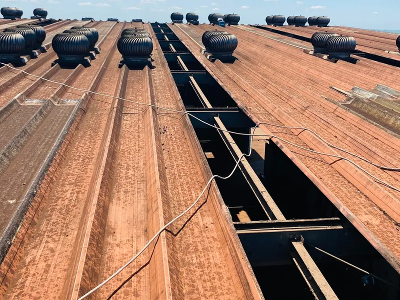

Manutenção industrial
Manutenção preventiva de cobertura industrial: o que revisar antes das chuvas

A maior parte das goteiras de um galpão começa pequena: uma calha entupida, um parafuso com a vedação ressecada, uma telha amassada. Uma revisão antes do período de chuvas encontra esses pontos enquanto o conserto ainda é simples e barato.
O que entra na revisão
- Calhas e condutores: limpeza de folhas e resíduos e conferência do caimento, para a água escoar sem transbordar para dentro do prédio.
- Telhas: procura por peças amassadas, furadas, corroídas ou deslocadas pelo vento.
- Fixações: parafusos frouxos e arruelas de vedação ressecadas estão entre as causas mais comuns de infiltração.
- Rufos, cumeeiras e arremates: os encontros entre telhado e parede concentram boa parte dos vazamentos.
- Domus e telhas translúcidas: peças trincadas ou opacas devem ser programadas para troca.
- Exaustores eólicos: conferir se giram livres e se a base está bem vedada.
- Estrutura metálica: pontos de corrosão pedem tratamento e repintura antes de avançarem.
Quando fazer
O melhor momento é antes da temporada de chuvas, com tempo para corrigir o que for encontrado. Vale repetir a inspeção depois de temporais e ventos fortes, que costumam soltar fixações e deslocar telhas. Em operações sensíveis a água, como áreas de estoque e de produção, o intervalo entre revisões deve ser menor.
Segurança vem primeiro
Subir em telhado é trabalho em altura e segue a NR-35: análise de risco, equipe treinada, ancoragem e linha de vida. Telhas e domus translúcidos não suportam o peso de uma pessoa, e por isso o deslocamento sobre a cobertura é planejado antes de a equipe subir.
Preventiva custa menos que corretiva
Trocar uma vedação ou limpar uma calha é um serviço rápido. Já uma infiltração que atinge mercadoria, máquina ou instalação elétrica vira parada de operação e prejuízo. A revisão programada também permite agendar o serviço para o horário de menor impacto na rotina da empresa.
A Gomes faz troca de telhas, limpeza de coberturas e manutenção de estruturas metálicas. Alguns desses trabalhos estão em Nosso trabalho.